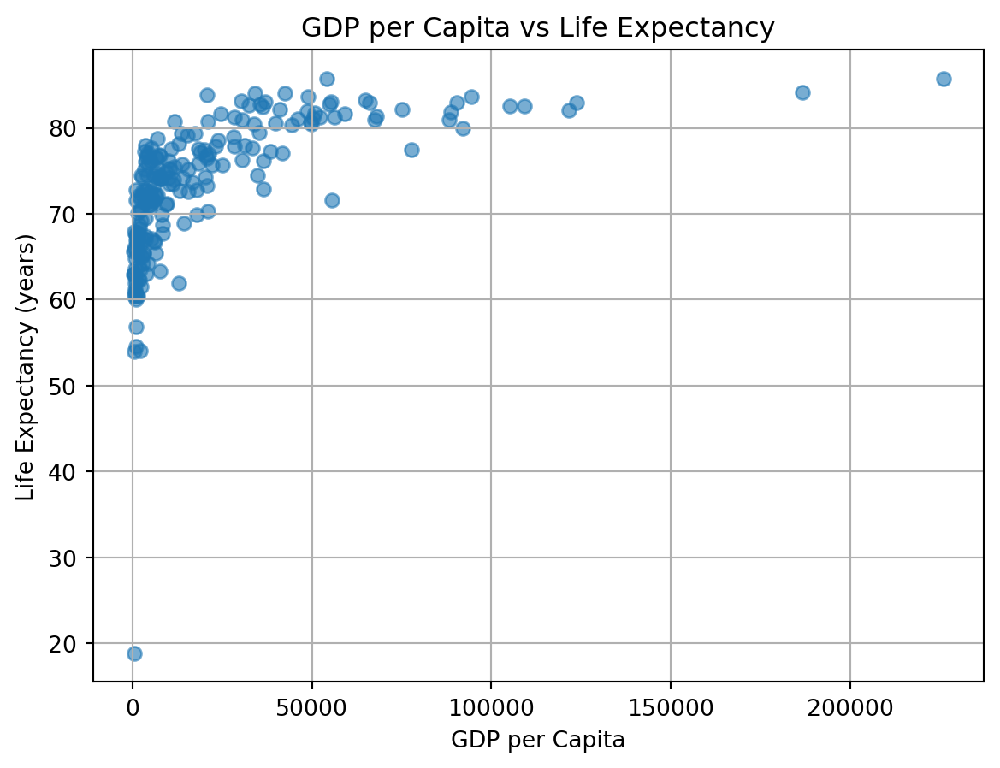
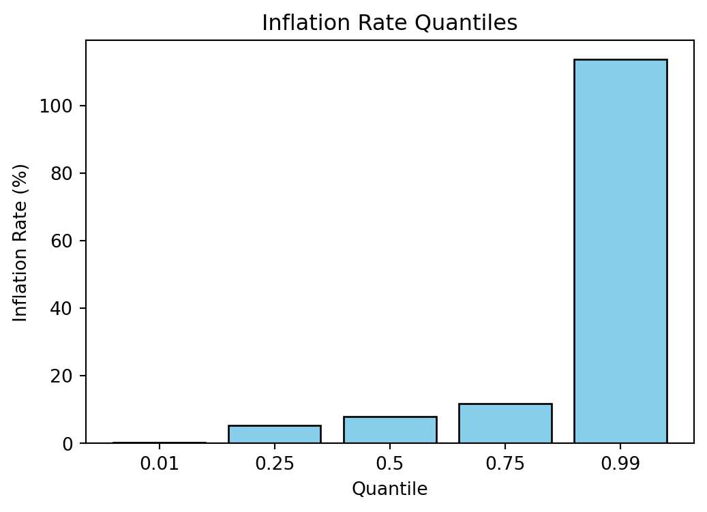

This is the beginning of my WDI 2022 analysis report.
Load the Dataset
import pandas as pd# Load the dataset (make sure wdi.csv is in the same repo, e.g. data/wdi.csv)df = pd.read_csv("wdi.csv")# Show the shape and first few rowsprint("Shape:", df.shape)## Exploratory Data Analysis# 1. GDP per Capita – check min and maxprint("GDP per Capita (min, max):", df["gdp_per_capita"].min(), df["gdp_per_capita"].max())# 2. Life Expectancy – check mean and medianprint("Life Expectancy (mean, median):", df["life_expectancy"].mean(), df["life_expectancy"].median())# 3. Inflation Rate – show summary statsprint("Inflation Rate Summary:")print(df["inflation_rate"].describe())
Shape: (217, 14)
GDP per Capita (min, max): 250.634225368744 226052.001905201
Life Expectancy (mean, median): 73.10801989434641 74.1609756097561
Inflation Rate Summary:
count 175.000000
mean 12.296172
std 19.396593
min -6.687321
25% 5.344829
50% 7.922049
75% 11.781866
max 171.205491
Name: inflation_rate, dtype: float64
Summary of Findings
GDP per Capita: Countries range from very low income (~250) to very high income (~226,000). This shows large global inequality.
Life Expectancy: Average life expectancy is about 73 years, median slightly higher at 74. This indicates most countries are clustered in the 70s, with a few low outliers.
Inflation Rate: Average inflation is about 12%, but with high variation (std ≈ 19). The maximum is extremely high (171%), showing some countries experience hyperinflation. The distribution is right-skewed.
Visualizations
HScatter plot of GDP per Capita and Life Expectancy

GDP per Capita vs Life Expectancy (WDI 2022). Source: World Bank (The World Bank 2022).
As shown in Table 1, GDP per Capita varies widely across countries, while Life Expectancy is much more concentrated.
Bar Chart: Inflation Rate Quartiles

Inflation Rate Quantiles (1%, 25%, 50%, 75%, 99%) from WDI 2022. Source: World Bank (The World Bank 2022).
Global inflation trends have also been highlighted in the IMF’s World Economic Outlook (International Monetary Fund 2022), which emphasizes the risks of high price volatility across emerging markets.